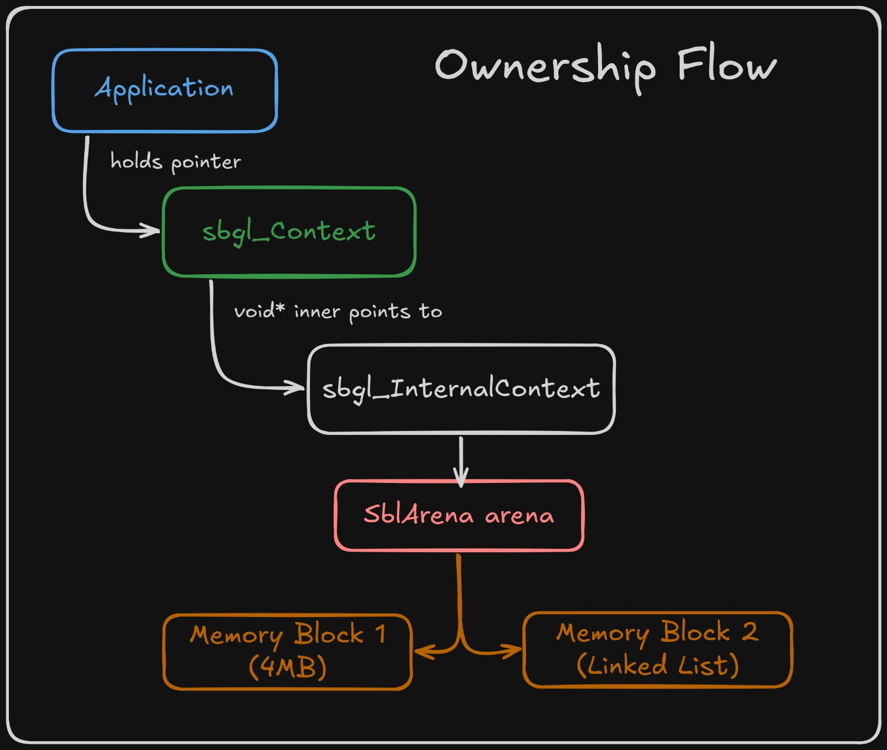
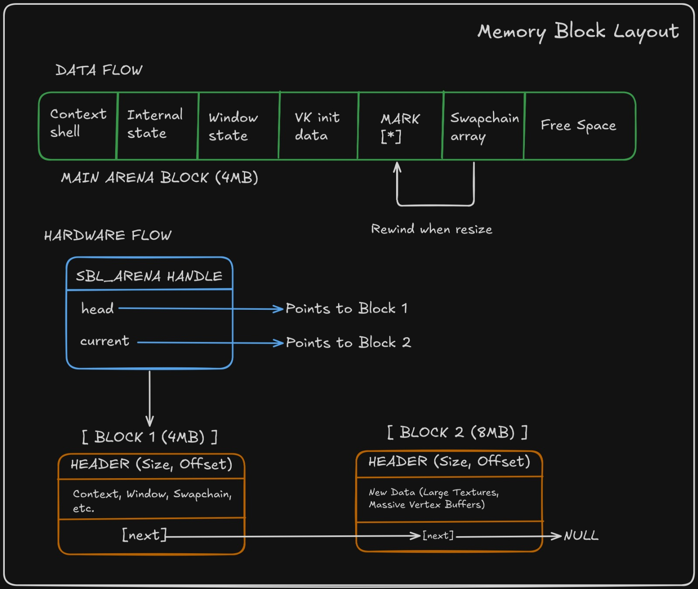

- Generated by
 1.12.0
1.12.0
|
SBgl 0.1.0
A graphics framework in C99
|
SBgl utilizes a deterministic, arena-based memory architecture designed to eliminate runtime fragmentation and provide allocation with unified lifecycles.
The following diagrams illustrate the core hierarchy and ownership.
The public context shell encapsulates the internal state and the physical memory controller.

The linear allocation pattern and the mark/rewind recycling mechanic are used during runtime events like window resizing.

The core of the memory system is the linear arena allocator defined in sbl_arena.h. This allocator manages contiguous blocks of memory and satisfies allocation requests by simply incrementing an offset pointer.
SBL_ARENA_PUSH_STRUCT_ZERO macro ensures that all allocated state starts in a known, valid zero-state.The sbgl_Context holds the primary SblArena for the entire engine instance. When sbgl_Init is called, the arena is initialized first, and then the context shell and all internal platform structures (like the window state) are allocated directly from it.
While the primary arena manages the context lifecycle, SBgl utilizes a Transient Arena for data that only needs to exist for the duration of a single frame (e.g., sort keys, merged draw packets, temporary math buffers). This arena is reset at the beginning of every frame processing cycle, providing zero-latency "scratch" memory without the overhead of heap fragmentation.
For high-frequency GPU data that changes every frame (such as instance transforms and indirect draw commands), SBgl avoids standard buffer creation and destruction. Instead, it utilizes a GPU Transient Buffer system.
The Vulkan backend pre-allocates a large, persistently mapped buffer (default 16MB) for each frame in flight.
sbgl_gfx_AllocateTransient function sub-allocates from the current frame's buffer using a linear offset.The sbgl_InternalContext assumes ownership of the arena. This creates a single point of failure and success: calling sbl_arena_free() during shutdown automatically releases every byte of memory used by the core, platform, and graphics layers.
While arenas are typically linear, SBgl implements a Mark and Rewind pattern to handle dynamic resources that must be recreated, such as the Vulkan Swapchain.
SblArenaMark) is taken before a set of dynamic allocations.| Feature | Implementation | Benefit |
|---|---|---|
| Primary Allocator | Linear Arena (SblArena) | Zero fragmentation, O(1) allocation. |
| Safety Pattern | Mark/Rewind | Constant memory footprint for dynamic arrays. |
| Initialization | Push-Struct-Zero | Deterministic starting state without memset. |
| Cleanup | Unified Arena Free | Single-call total resource reclamation. |